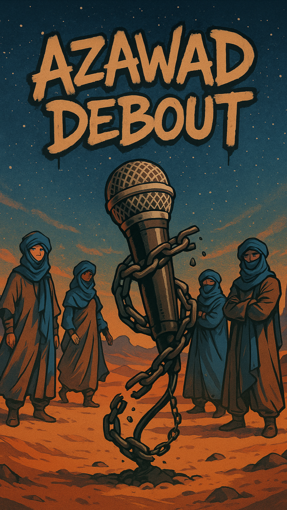
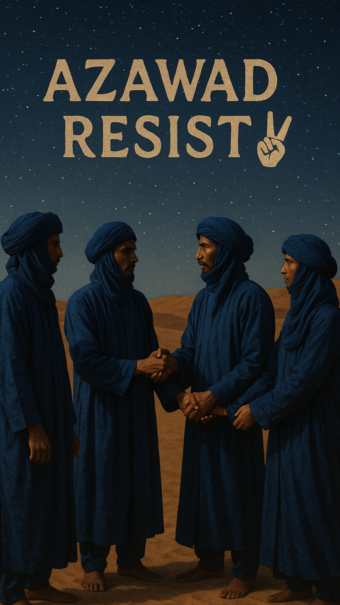
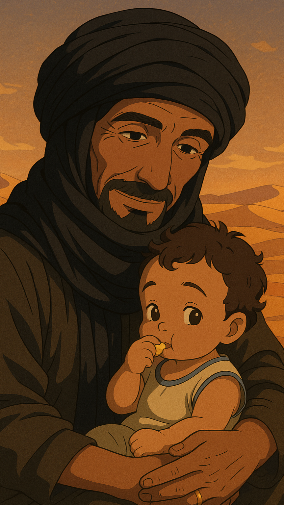
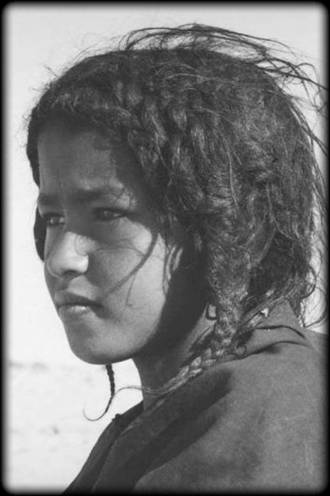
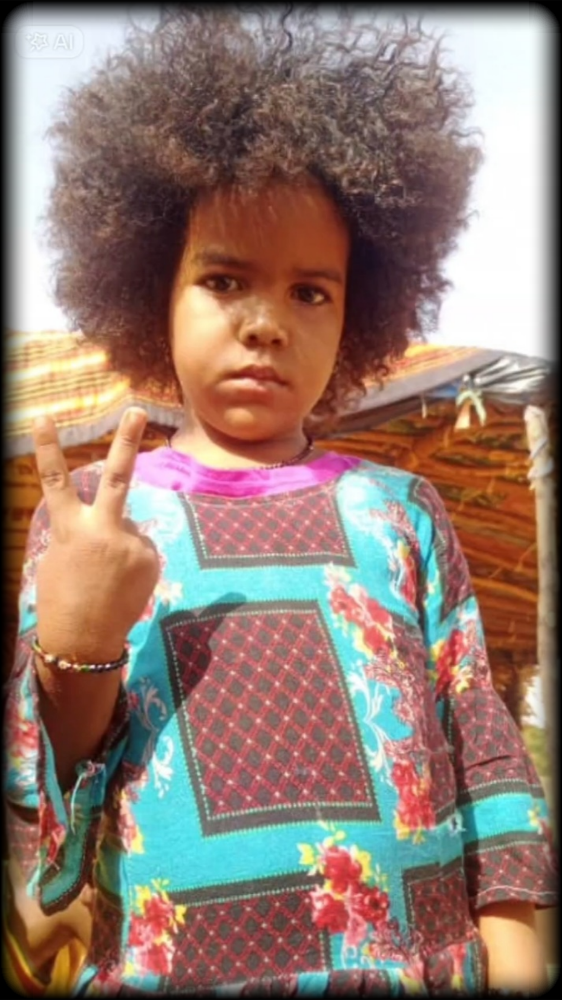
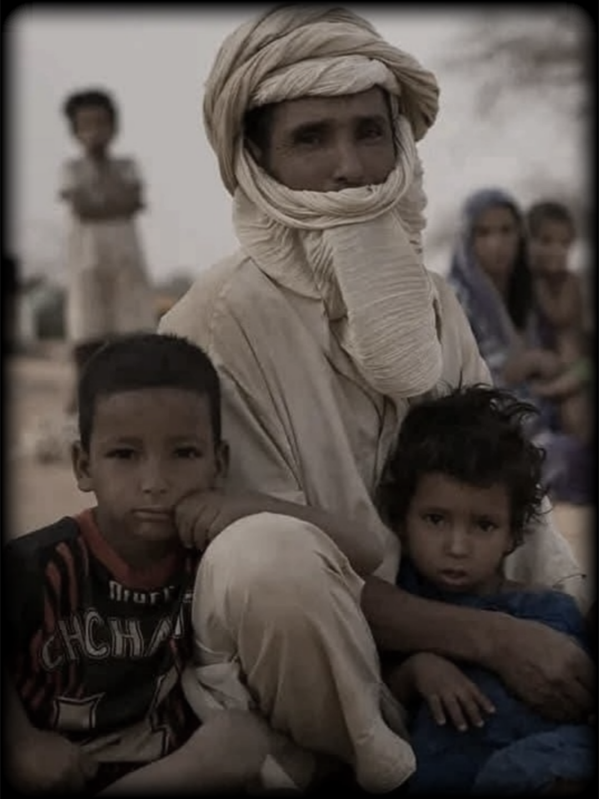
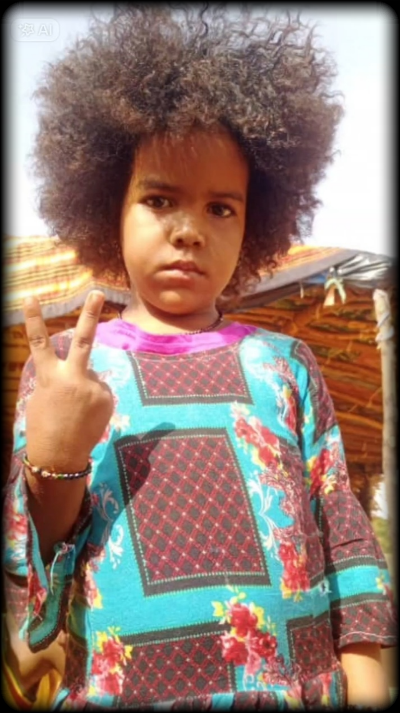
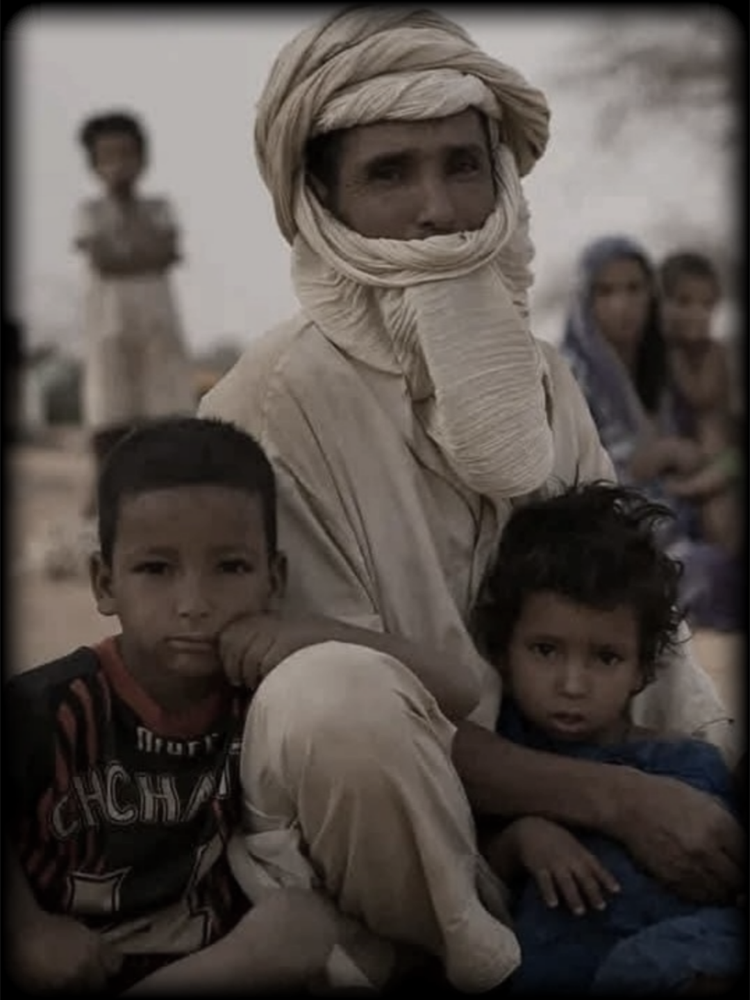
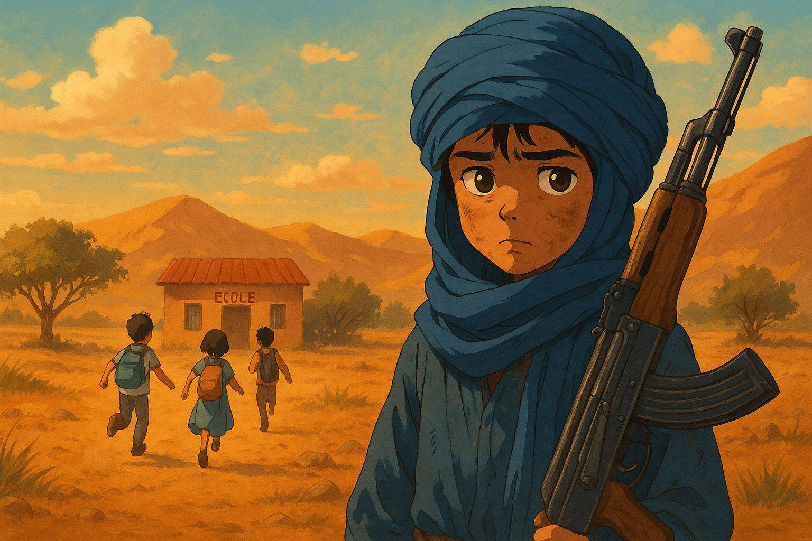

Espoir et Résistance



Wagner se retire..?
Frère, c’est qu’un nouveau masque,
Les uniformes changent,
mais la main reste la même,
Barkhane hier, “africa corps” aujourd’hui,
Bamako sert d’écran, mais les ordres viennent d’ailleurs, tu sais..
Azawad..
l’indépendance, c’est notre seul chemin,
Un peuple libre qui choisit ses propres refrains,
Pas de place pour des marionnettes au bout de la ficelle,
Seule la souveraineté vraie ramène la paix,
et c’est essentiel.
Marche avec la vérité, refuse les chaînes,
Le Sahel est un feu qu’on éteint pas avec des promesses vaines,
Indépendance d’abord, c’est plus qu’un rêve,
C’est la seule réponse à la nuit qu’ils nous laissent.
Oppression et chaos — injustice, violence,
Mainmise étrangère qui nous vole notre silence,
Liberté absente — droits piétinés,
Bamako sous tutelle, souveraineté kidnappée.
Frères et sœurs dans l’incertitude et la peur,
Insécurité, avenir confisqué, cœurs en sueur,
Face à cette nuit imposée par d’autres,
Indépendance et souveraineté sont nos apôtres.
La lumière, c’est la liberté, la dignité,
L’obscurité, c’est la soumission et la duplicité.
Alors on se lève pour résister, pour exister,
Pour bâtir un avenir libre et jamais plier.
C’est l’appel à marcher droit, tête haute et déterminés,
Contre la nuit qu’ils nous laissent, nous on va briller.
Azawad debout, l’espoir rallumé,
Pour que la vérité éclaire chaque vérité volée..
F.Meg
Azawad

Azawad et ses enfants
relèvent la tête face à l’injustice.
Ils refusent de courber l’échine devant la peur.
Dans chaque souffle du désert,
ils entendent l’appel à la liberté,
et la révolte naît du sable et des cicatrices de l’exil.
Les forces de l’Azawad veillent,
fières et déterminées,
prêtes à défendre leurs chefs et leur terre,
prêtes à briser les chaînes imposées par ceux qui voudraient les soumettre.
Cette chanson est un cri de ralliement,
un hommage à l’esprit de Résistance et d’Unité.
Car Azawad est plus qu’un simple territoire :
c’est une âme vivante,
une force que l’on ne peut ni effacer, ni acheter.
C’est un peuple en marche,
porteur d’une dignité qui refuse de mourir.
Liberté

 



Ô Azawad,
combien de temps encore les larmes des civils vont-elles couler ?
Je suis la femme, l’enfant, le vieillard,
et je crie : assez, assez de massacres.
Il existe une terre d’une pureté rare,
où le souffle du désert porte la bénédiction pour chacun.
Là, si ton cœur est sincère, la rédemption t’attend.
Azawad est une terre sacrée,
la plus pure que tes pas fouleront.
Si nous avançons ensemble,
nous trouverons la paix et la compréhension.
Azawad,
c’est la terre de la liberté,
celle où se lèvent les justes et les braves.
Celui qui y parvient verra la lumière de la libération.
Et à celui qui agit avec droiture,
il restera les mots à transmettre,
pour que les enfants sachent
qu’un jour, la liberté a régné sur cette terre.
Enfance volée

Pendant que des enfants en Europe courent vers l’école avec un cartable,
d'autres, dans l’Azawad, grandissent trop vite,
le regard vieilli par la guerre...
l’enfance volée par l’exil ou le fusil.
Les enfants portent le deuil avant même d’avoir rêvé.
Certains prennent les armes pour survivre..!
Mon Dieu, qu’ont-ils fait pour mériter si peu d’enfance..?
Qu’ont-ils fait pour être oubliés du monde..?